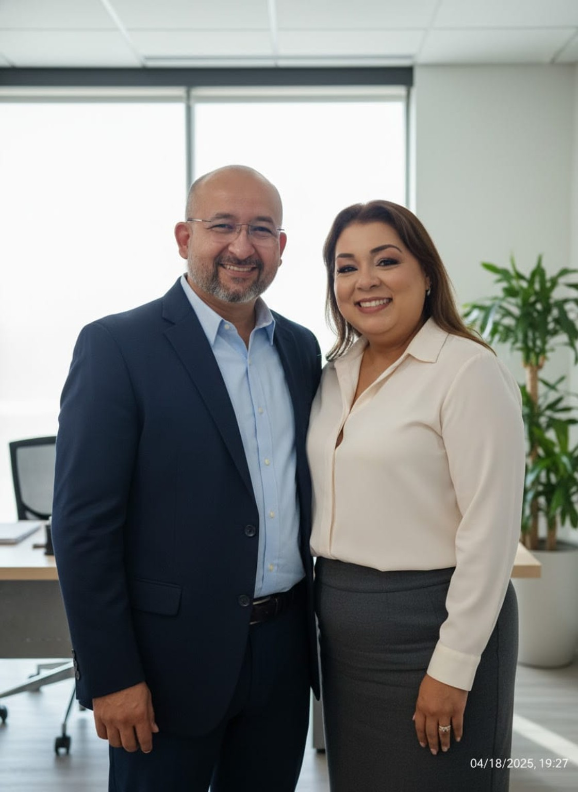

♡
Terapia de Casais
Um espaço de diálogo para lidar com conflitos, comunicação, confiança e decisões importantes sobre a relação.
A terapia oferece um espaço seguro e acolhedor para compreender conflitos, melhorar a comunicação e encontrar novos caminhos para o relacionamento.


Sou casado com Márcia Rebelo há mais de 30 anos e pai de duas filhas e um filho. A família faz parte da minha história e da maneira como compreendo a importância dos vínculos e do diálogo.
Meu trabalho é oferecer um espaço de escuta, respeito e acolhimento para pessoas, casais e famílias que desejam compreender melhor seus desafios emocionais e relacionais.
Na psicoterapia, cada história é recebida com atenção às suas particularidades, sem julgamentos e sem respostas prontas.
Atendimentos online e presenciais em Manaus, Amazonas.
Um espaço de cuidado psicológico que considera a singularidade de cada pessoa, casal e família.
Um espaço de diálogo para lidar com conflitos, comunicação, confiança e decisões importantes sobre a relação.
Acompanhamento voltado à compreensão de vínculos, convivência e desafios presentes nas relações familiares.
Um ambiente de escuta e reflexão para lidar com emoções, relacionamentos e questões pessoais.
Um processo pensado para que você possa buscar informações e iniciar o acompanhamento com tranquilidade.
Envie uma mensagem pelo WhatsApp para esclarecer dúvidas sobre modalidades e disponibilidade.
Consulte a possibilidade de atendimento online ou presencial em Manaus.
O processo terapêutico é conduzido de acordo com as necessidades e características de cada atendimento.
Valores informados para atendimentos individuais e de casais. A frequência e a continuidade são conversadas conforme as necessidades de cada caso.
Para quem deseja iniciar o processo ou realizar uma sessão pontual.
Para quem busca continuidade e um espaço regular de acompanhamento.
Para quem deseja organizar um acompanhamento mais frequente e prolongado.
Os valores e formatos são informativos e devem ser confirmados diretamente com o profissional. A frequência e continuidade dependem da avaliação profissional. A divulgação pública de preços e condições deve ser revisada pelo responsável à luz das orientações éticas do CFP/CRP antes do uso comercial.
Sim. Há atendimento online e presencial em Manaus, mediante disponibilidade e confirmação das condições com o profissional.
Sim. Além de terapia de casais e familiar, Augusto oferece psicoterapia individual.
As condições e a configuração do atendimento são discutidas com o profissional, considerando as necessidades de cada situação.
Entre em contato pelo WhatsApp para consultar agenda, modalidades e demais informações.
O trabalho psicológico segue os deveres éticos de sigilo profissional, observadas as exceções previstas nas normas aplicáveis.
Se deseja saber mais sobre o acompanhamento psicológico, envie uma mensagem e consulte a disponibilidade para atendimento.
Atendimento online e presencial em Manaus